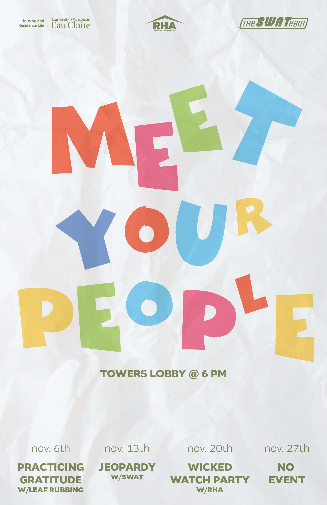
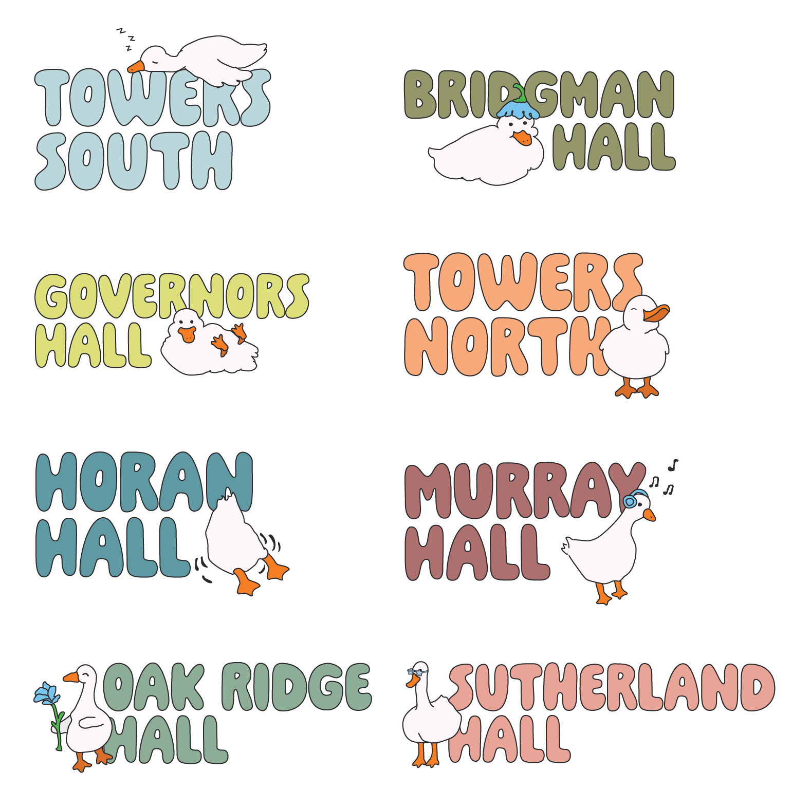
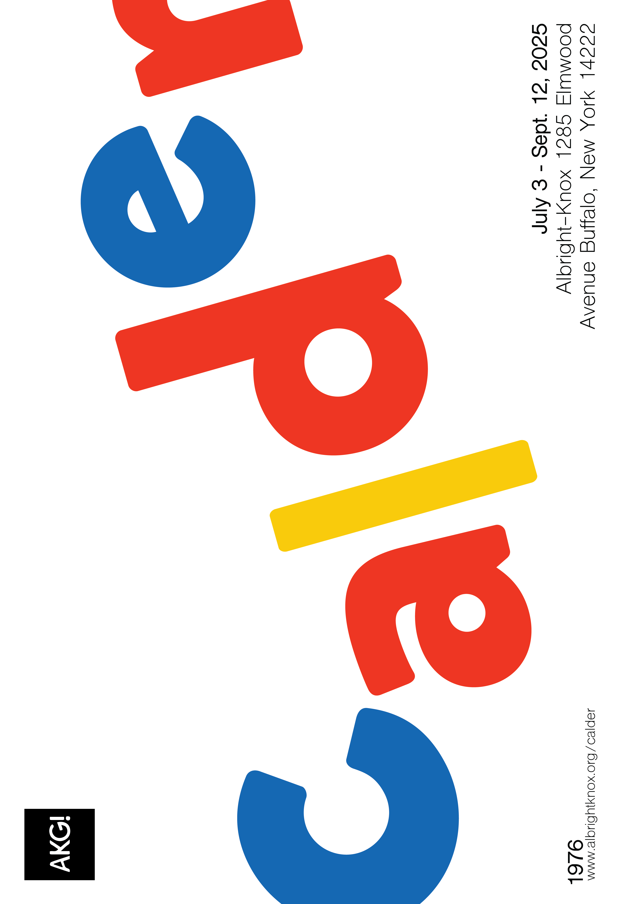
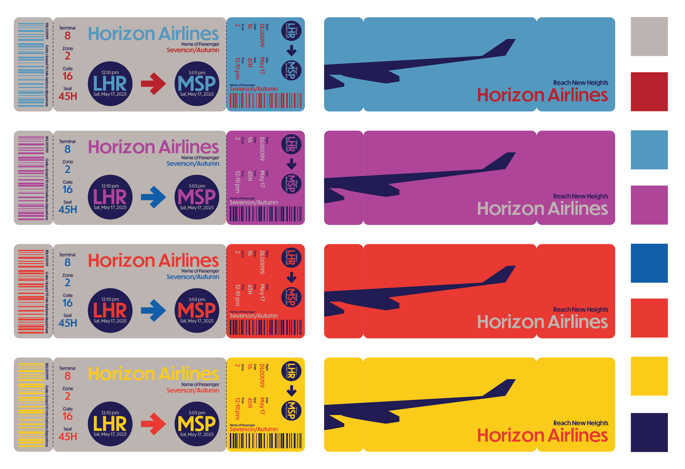
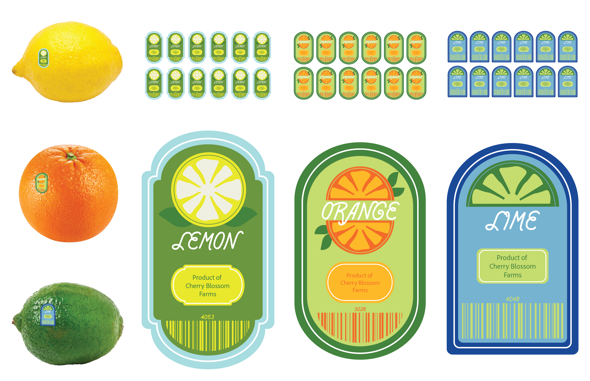

About Me
Hello, I’m Autumn Severson! I am a Graphic Communications major and Multimedia Communications minor at the University of Wisconsin Eau Claire. I’m building my design experience through both coursework and my roles as a graphic designer for UW–Eau Claire Recreation and Sport Operations and UW–Eau Claire Housing and Residence Life.
Work Experience
Graphic Designer - UWEC Housing and Residence Life
2024-Present
- Design a wide range of visual materials, including dorm posters, event promotions, social media graphics, and informational handouts, to support Housing initiatives
- Initially collaborated with a fellow student designer; now serve as the sole graphic designer, independently managing all creative projects
- Communicate regularly with supervisors and Housing staff to ensure designs align with departmental goals and audience needs
- Adapt to shifting priorities and feedback, maintaining consistency and quality across print and digital formats
- Demonstrate initiative and ownership in a fast-paced environment, balancing creativity with practical execution
Graphic Designer - UWEC Recreation and Sport Operations
2025-Present
- Collaborated remotely with Recreation staff to design promotional materials aligned with brand standards and program goals
- Maintained clear communication across departments, providing regular project updates and incorporating feedback from multiple employees
- Demonstrated initiative by asking clarifying questions and proactively managing revisions to meet evolving needs
- Balanced dual design roles with UW–Eau Claire Housing, showcasing strong time management and adaptability in fast-paced environments
- Selected for the position based on a professional recommendation, reflecting trust and recognition of design capabilities
Gallery




